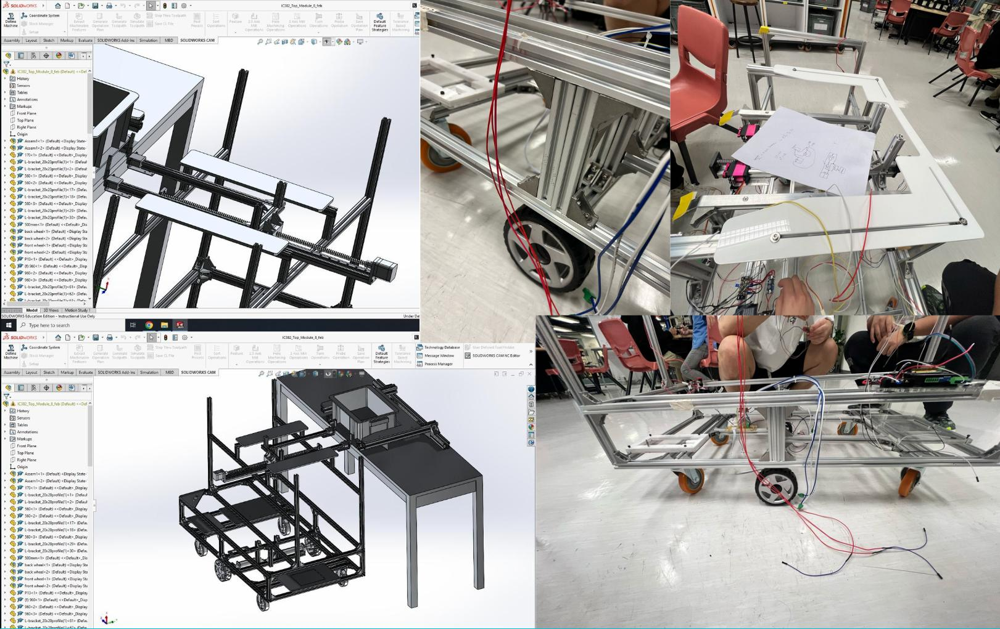

The Autonomous Tools Trolley was designed to transport equipment across an industrial workspace without human intervention. Over six months I worked on conceptualizing, designing, and building a smart trolley that could navigate a predefined floor plan and pick up/drop off tools at designated locations.
The trolley operates using:
- SLAM (Simultaneous Localization and Mapping for precise movement tracking.
- Obstacle avoidance sensors to prevent collisions.
- Autonomous pick-and-drop mechanisms for hands-free tool handling.
The final prototype was successfully tested in a real-world environment, demonstrating smooth navigation and reliable delivery of tools. Back to Home